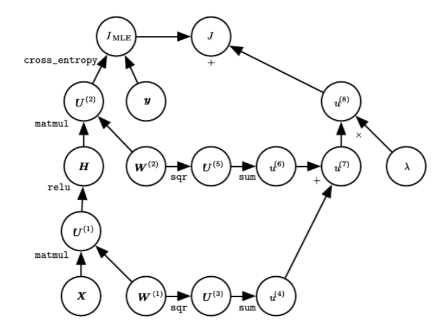
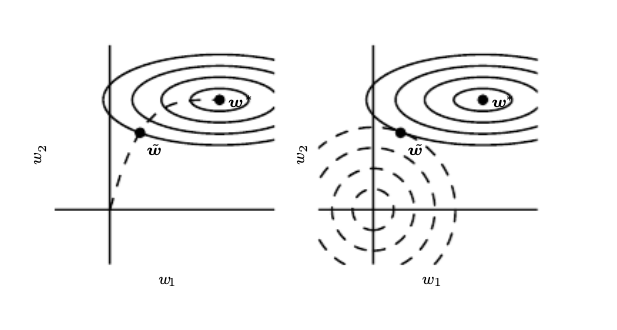

Regularization in Deep Neural Networks#
In this chapter we look at the training aspects of DNNs and investigate schemes that can help us avoid overfitting a common trait of putting too much network capacity to the supervised learning problem at hand.
L2 regularization#
This is perhaps the most common form of regularization. It can be implemented by penalizing the squared magnitude of all parameters directly in the objective.
\(\lambda J_{penalty} = \lambda \left(\sum_l W_{(l)}^2 \right) \)
where \(l\) is the hidden layer index and \(W\) is the weight tensor.
The L2 regularization has the intuitive interpretation of heavily penalizing peaky weight vectors and preferring diffuse weight vectors. Due to multiplicative interactions between weights and inputs this has the appealing property of encouraging the network to use all of its inputs a little rather than some of its inputs a lot. The following figure presents a computational graph of a regularized DNN.
 Regularized DNN. Notice that in this graph (taken from section 6.5.7 of the DL book), the gates are mentioned in typewriter font and the input and output variables are represented as circles. There are different backward paths towards the weight matrices - can you identify them ?
Lastly, notice that during gradient descent parameter update, using the L2 regularization ultimately means that every weight is decayed linearly: \(W += -lambda * W\) towards zero.
L1 regularization#
This is another relatively common form of regularization, where for each weight \(w\) we add the term \(\lambda \mid w \mid\) to the objective. It is possible to combine the L1 regularization with the L2 regularization: \(\lambda_1 \mid w \mid + \lambda_2 w^2\) (this is called Elastic net regularization). The L1 regularization has the intriguing property that it leads the weight vectors to become sparse during optimization (i.e. very close to exactly zero). In other words, neurons with L1 regularization end up using only a sparse subset of their most important inputs and become nearly invariant to the “noisy” inputs. In comparison, final weight vectors from L2 regularization are usually diffuse, small numbers. In practice, if you are not concerned with explicit feature selection, L2 regularization can be expected to give superior performance over L1.
Dropout#
This is an extremely effective, simple regularization technique by Srivastava et al. in Dropout: A Simple Way to Prevent Neural Networks from Overfitting that complements the other methods (L1, L2). While training, dropout is implemented by only keeping a neuron active with some probability \(p\) (a hyperparameter), or setting it to zero otherwise.
 During training, Dropout can be interpreted as sampling a Neural Network within the full Neural Network, and only updating the parameters of the sampled network based on the input data. (However, the exponential number of possible sampled networks are not independent because they share the parameters.) During testing there is no dropout applied, with the interpretation of evaluating an averaged prediction across the exponentially-sized ensemble of all sub-networks (more about ensembles in the next section).
During training, Dropout can be interpreted as sampling a Neural Network within the full Neural Network, and only updating the parameters of the sampled network based on the input data. (However, the exponential number of possible sampled networks are not independent because they share the parameters.) During testing there is no dropout applied, with the interpretation of evaluating an averaged prediction across the exponentially-sized ensemble of all sub-networks (more about ensembles in the next section).
Vanilla dropout in an example 3-layer Neural Network would be implemented as follows:
""" Vanilla Dropout: Not recommended implementation (see notes below) """
p = 0.5 # probability of keeping a unit active. higher = less dropout
def train_step(X):
""" X contains the data """
# forward pass for example 3-layer neural network
H1 = np.maximum(0, np.dot(W1, X) + b1)
U1 = np.random.rand(*H1.shape) < p # first dropout mask
H1 *= U1 # drop!
H2 = np.maximum(0, np.dot(W2, H1) + b2)
U2 = np.random.rand(*H2.shape) < p # second dropout mask
H2 *= U2 # drop!
out = np.dot(W3, H2) + b3
# backward pass: compute gradients... (not shown)
# perform parameter update... (not shown)
def predict(X):
# ensembled forward pass
H1 = np.maximum(0, np.dot(W1, X) + b1) * p # NOTE: scale the activations
H2 = np.maximum(0, np.dot(W2, H1) + b2) * p # NOTE: scale the activations
out = np.dot(W3, H2) + b3
In the code above, inside the train_step function we have performed dropout twice: on the first hidden layer and on the second hidden layer. It is also possible to perform dropout right on the input layer, in which case we would also create a binary mask for the input \(X\). The backward pass remains unchanged, but of course has to take into account the generated masks \(U1,U2\).
Crucially, note that in the predict function we are not dropping anymore, but we are performing a scaling of both hidden layer outputs by \(p\). This is important because at test time all neurons see all their inputs, so we want the outputs of neurons at test time to be identical to their expected outputs at training time. For example, in case of \(p = 0.5\), the neurons must halve their outputs at test time to have the same output as they had during training time (in expectation). To see this, consider an output of a neuron \(x\) (before dropout). With dropout, the expected output from this neuron will become \(px + (1-p)0\), because the neuron’s output will be set to zero with probability \(1-p\). At test time, when we keep the neuron always active, we must adjust \(x \rightarrow px\) to keep the same expected output. It can also be shown that performing this attenuation at test time can be related to the process of iterating over all the possible binary masks (and therefore all the exponentially many sub-networks) and computing their ensemble prediction.
The undesirable property of the scheme presented above is that we must scale the activations by \(p\) at test time. Since test-time performance is so critical, it is always preferable to use inverted dropout, which performs the scaling at train time, leaving the forward pass at test time untouched. Additionally, this has the appealing property that the prediction code can remain untouched when you decide to tweak where you apply dropout, or if at all. Inverted dropout looks as follows:
"""
Inverted Dropout: Recommended implementation example.
We drop and scale at train time and don't do anything at test time.
"""
p = 0.5 # probability of keeping a unit active. higher = less dropout
def train_step(X):
# forward pass for example 3-layer neural network
H1 = np.maximum(0, np.dot(W1, X) + b1)
U1 = (np.random.rand(*H1.shape) < p) / p # first dropout mask. Notice /p!
H1 *= U1 # drop!
H2 = np.maximum(0, np.dot(W2, H1) + b2)
U2 = (np.random.rand(*H2.shape) < p) / p # second dropout mask. Notice /p!
H2 *= U2 # drop!
out = np.dot(W3, H2) + b3
# backward pass: compute gradients... (not shown)
# perform parameter update... (not shown)
def predict(X):
# ensembled forward pass
H1 = np.maximum(0, np.dot(W1, X) + b1) # no scaling necessary
H2 = np.maximum(0, np.dot(W2, H1) + b2)
out = np.dot(W3, H2) + b3
Dropout falls into a more general category of methods that introduce stochastic behavior in the forward pass of the network. During testing, the noise is marginalized over analytically (as is the case with dropout when multiplying by \(p\)), or numerically (e.g. via sampling, by performing several forward passes with different random decisions and then averaging over them). An example of other research in this direction includes DropConnect, where a random set of weights is instead set to zero during forward pass. As foreshadowing, Convolutional Neural Networks also take advantage of this theme with methods such as stochastic pooling, fractional pooling, and data augmentation. We will go into details of these methods later.
In practice, it is most common to use a single, global L2 regularization strength that is cross-validated. It is also common to combine this with dropout applied after all layers. The value of \(p = 0.5\) is a reasonable default, but this can be tuned on validation data. Note that dropout’s usage has been limited by another technique called Batch Normalization and there is some interesting interference between the two for those that want to dig further.
Early stopping#
In these notes we focused on approaches that have some conceptual depth. We avoid treating extensively techniques that belong to the category of experiment management. For example early stopping is based on the experiment manager that is monitoring the validation loss and stops training when it observes that the validation error increased while at the same time retrieves the best model that has been trained to the data scientist. This does not stop the approach being one of the most popular regularization approaches as it can be seen as an L2 regularizer as shown below.
 Early stopping (left) results in the same regularized weight with the L2 penalty regularizer
Weight initialization#
For layers with ReLU units, the suggested experimentally initialization for the weight is to use \(W = np.random.randn(n) * \sqrt(2.0/n)\), as discussed in He et al..